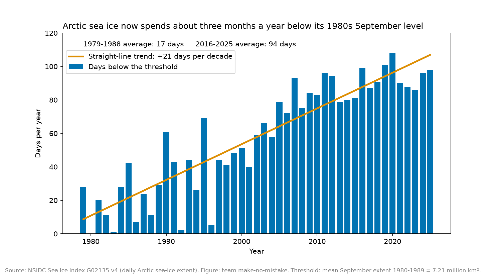

The Shrinking Ice: is the Arctic losing its summer?
IE 421 Data Science for Engineers · Term project · Theme T5 Hot Planet
Team make-no-mistake: Ada Güner Nohut, Canberk Doğruoğlu, Tümer Kaan Mutlu, Yağız Efe
Arctic sea ice grows every winter and shrinks every summer. Satellites have measured this yearly cycle since 1978. Most people know that the ice is shrinking; we ask how the cycle itself is changing, and how closely the summer loss follows temperature and CO2.
1. The ice now spends about three months a year below its old summer low

In 1979–1988 the ice was smaller than the 1980s September average on 17 days a year; in 2016–2025 it was smaller on 94 days a year, more than five times as often.
The threshold is the average September extent of the 1980s (7.21 million km²), the smallest the ice used to get. Today the ice is below that level for about three months every year. The count grows by about 21 days per decade. A straight line fits the counts better than a model in which the rise starts late, so the climb has been going on since the start of the satellite record; it became larger than the normal year-to-year variation in the early 1990s. Before August 1987 the satellite measured only every other day; we filled each missing day from its neighbours and tested that this changes the yearly counts by at most 2 days.
2. Summer is losing ice much faster than winter

Every month has less ice than in the 1980s, but September lost 35% while March lost only 7%.
The winter maximum has dropped only a little, but the summer minimum has dropped a lot, so the gap between the two is growing: the yearly cycle is getting deeper. The largest losses are from July to October (21–35%). This is why we focus on the summer in the rest of the project: if the ice keeps losing summer faster than winter, the Arctic ocean stays open for longer each year.
Data
- NSIDC Sea Ice Index (G02135, version 4): daily Arctic sea-ice extent, 1978–today
- NASA GISTEMP v4: monthly temperature anomalies, Northern Hemisphere and global
- NOAA Mauna Loa CO2: monthly mean CO2
Code, data card and exploratory analysis: project repository.